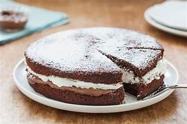

Torta moretta
Ingredienti
- 40 g di cacao amaro
- 200 g di farina
- 200 g di zucchero
- 250 ml di latte
- 1 uovo
- 250 ml di panna da montare
- 1 bustina di lievito
- QB Nutella
- QB zucchero a velo
Preparazione
1. Preparazione dell'Impasto:
- In una ciotola capiente, monta l'uovo con lo zucchero fino a ottenere un composto chiaro e spumoso.
- Aggiungi il latte e mescola bene.
- Setaccia la farina, il cacao e il lievito, quindi incorporali gradualmente al composto, mescolando fino a ottenere un impasto omogeneo.
2. Cottura:
- Versa il composto in una teglia a cerniera precedentemente imburrata e infarinata.
- Cuoci in forno preriscaldato a 170°C per circa 30 minuti. Fai la prova stecchino: se esce pulito, la torta è pronta.
3. Raffreddamento:
- Una volta sfornata, lascia raffreddare la torta nella teglia per qualche minuto, poi trasferiscila su una griglia per farla raffreddare completamente.
4. Farcitura:
- Taglia la torta a metà in orizzontale. Spalma uno strato di Nutella sulla base.
- In una ciotola, monta la panna e aggiungi 5-6 cucchiaini di zucchero per dolcificare. Spalma la panna montata sopra la Nutella.
- Ricomponi la torta sovrapponendo l'altra metà.
5. Presentazione:
- Spolvera la superficie della torta con zucchero a velo prima di servire.